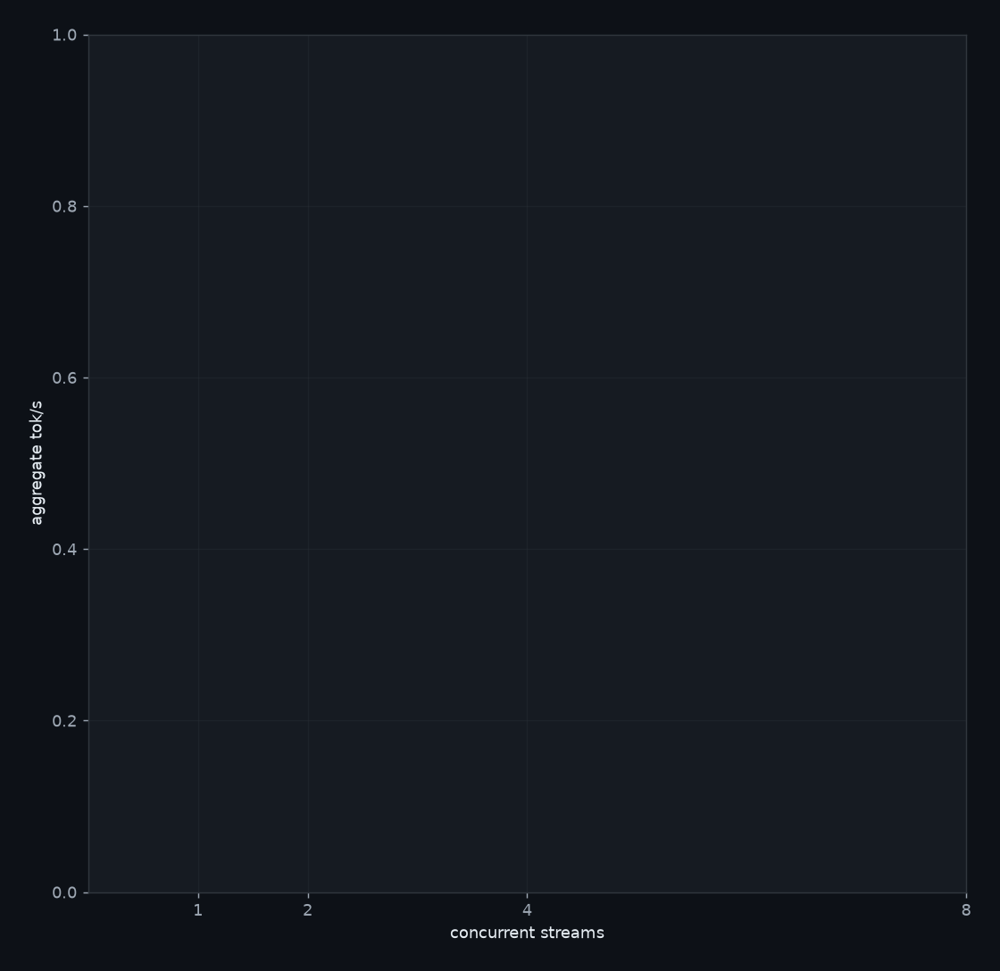

Ryzen AI MAX+ 395, 16-core / 32-thread · Radeon 8060S gfx1151, 40 CU · Vulkan/RADV · 128 GB LPDDR5 (BIOS: 64 GB VRAM + 62 GB RAM; Vulkan VRAM+GTT ≈ 95 GB) · llama.cpp Vulkan. Everything beyond the headline score: how these models behave under load, whether the code they write is fast, whether the wording of the prompt changes the answer, and whether they can fix their own bugs. The summary ranks them; this page explains why.
The same 8 C tasks, replayed with 1, 2, 4, 8… requests in flight. The line is aggregate tok/s across streams. Every answer is still compiled and tested. This scores the serving stack, not the model.

Implement in C11: `void range_sums(const int *a, size_t n, const size_t *lo, const size_t *hi, size_t q, long long *out)`. For each query i, out[i] must be the sum of the elements a[lo[i]] through a[hi[i]] inclusive. Every query satisfies lo[i] <= hi[i] < n.
Reply with only a C code block. No main function, no tests, no explanation.Implement in C11: `void range_sums(const int *a, size_t n, const size_t *lo, const size_t *hi, size_t q, long long *out)`. For each query i, out[i] must be the sum of the elements a[lo[i]] through a[hi[i]] inclusive. Every query satisfies lo[i] <= hi[i] < n. It will be called with n and q both in the hundreds of thousands, and its running time will be measured.
Reply with only a C code block. No main function, no tests, no explanation.Every prompt the harness sends, verbatim and complete — there is no system prompt, no few-shot examples and no retries beyond the trial count. These are read straight out of the eval modules rather than copied, so they cannot drift from what was actually asked. The same text also appears next to each failing sample further down, so you can read the instruction and the answer together.
reverse_string easyImplement in C11: `void reverse_string(char *s)`. Reverses s in place. Reply with only a C code block. No main function, no tests, no explanation.
is_prime easyImplement in C11: `int is_prime(int n)`. Returns 1 if n is prime, 0 otherwise. n <= 1 is not prime. Reply with only a C code block. No main function, no tests, no explanation.
fizzbuzz easyImplement in C11: `const char *fizzbuzz(int n)`. Returns "FizzBuzz" if n divisible by 15, "Fizz" by 3, "Buzz" by 5, else the decimal string of n. A static buffer is fine. Reply with only a C code block. No main function, no tests, no explanation.
binary_search easyImplement in C11: `int binary_search(const int *a, int n, int key)`. a is sorted ascending, n elements. Returns the index of key, or -1 if absent. Reply with only a C code block. No main function, no tests, no explanation.
count_words easyImplement in C11: `int count_words(const char *s)`. Counts words in s. Words are separated by one or more spaces; leading/trailing spaces possible. Reply with only a C code block. No main function, no tests, no explanation.
max_subarray easyImplement in C11: `int max_subarray(const int *a, int n)`. Returns the maximum sum of any non-empty contiguous subarray (Kadane). n >= 1. Reply with only a C code block. No main function, no tests, no explanation.
itoa easyImplement in C11: `void itoa(int value, char *buf)`. Writes the decimal string of value into buf (NUL-terminated). Must handle 0 and negatives, including INT_MIN. Reply with only a C code block. No main function, no tests, no explanation.
stack easyImplement in C11: `void stack_init(Stack *s); int stack_push(Stack *s, int v); int stack_pop(Stack *s, int *out)`. Fixed-capacity int stack (16). Include this exact definition in your code: typedef struct { int data[16]; int top; } Stack; push returns 0 on success, -1 when full; pop returns 0 on success, -1 when empty.
Reply with only a C code block. No main function, no tests, no explanation.popcount easyImplement in C11: `unsigned popcount(unsigned x)`. Returns the number of set bits in x. Reply with only a C code block. No main function, no tests, no explanation.
rot13 easyImplement in C11: `void rot13(char *s)`. Applies ROT13 to s in place: letters rotate by 13, all other characters unchanged. Reply with only a C code block. No main function, no tests, no explanation.
parse_csv_ints easyImplement in C11: `int parse_csv_ints(const char *s, int *out, int max)`. Parses comma-separated integers from s into out (at most max). Returns the count stored. Input is well-formed (digits, optional leading minus, commas). Reply with only a C code block. No main function, no tests, no explanation.
bswap32 easyImplement in C11: `uint32_t bswap32(uint32_t x)`. Returns x with its four bytes reversed (endian swap). Include <stdint.h> yourself. Reply with only a C code block. No main function, no tests, no explanation.
trim easyImplement in C11: `void trim(char *s)`. Strips leading and trailing whitespace (space, tab, newline) from s in place. Reply with only a C code block. No main function, no tests, no explanation.
cmp_desc easyImplement in C11: `int cmp_desc(const void *a, const void *b)`. qsort comparator ordering int values descending. Must be safe against overflow. Reply with only a C code block. No main function, no tests, no explanation.
ring easyImplement in C11: `void ring_init(Ring *r); int ring_push(Ring *r, int v); int ring_pop(Ring *r, int *out)`. Circular buffer, capacity 8, FIFO. Include this exact definition in your code: typedef struct { int data[8]; int head; int count; } Ring; push returns 0 on success, -1 when full; pop returns 0 on success, -1 when empty. Pushes after pops must reuse freed slots (wraparound).
Reply with only a C code block. No main function, no tests, no explanation.atoi_strict easyImplement in C11: `int atoi_strict(const char *s, int *out)`. Parses an optionally negative decimal integer from s into out. Returns 0 on success, -1 if s is not exactly one valid integer (empty, junk, trailing chars). No overflow tests. Reply with only a C code block. No main function, no tests, no explanation.
glob_match hardImplement in C11: `int glob_match(const char *pat, const char *str)`. Returns 1 if str matches the shell-style pattern pat, else 0. '*' matches any sequence (including empty), '?' matches exactly one character. All other characters match literally. The whole string must match. Reply with only a C code block. No main function, no tests, no explanation.
rpn_eval hardImplement in C11: `double rpn_eval(const char *expr)`. Evaluates a space-separated Reverse Polish Notation expression of non-negative integers and operators + - * /. Returns the result as a double. Input is always valid and non-empty. Reply with only a C code block. No main function, no tests, no explanation.
csv_field hardImplement in C11: `int csv_field(const char *line, int idx, char *out, size_t cap)`. Extracts field idx (0-based) from one RFC-4180 CSV line into out (NUL-terminated, truncated to cap-1 chars). Quoted fields may contain commas and doubled quotes '""' which unescape to a single quote. Returns the field's unescaped length, or -1 if idx is out of range. Reply with only a C code block. No main function, no tests, no explanation.
arena_alloc brutalImplement in C11: `void *arena_alloc(size_t n)`. Write a complete fixed-buffer allocator, four functions in one code block: void arena_init(void *buf, size_t size); void *arena_alloc(size_t n); void arena_free(void *p); void *arena_realloc(void *p, size_t n); arena_init hands the allocator a buffer and resets all state. All bookkeeping must live inside that buffer; do not call malloc. arena_alloc returns memory suitably aligned for any type (_Alignof(max_align_t)), or NULL if the request cannot be satisfied; arena_alloc(0) returns NULL. arena_free(NULL) is a no-op. Freed blocks must be reusable, and a freed block must merge with a free neighbour on either side so that later large requests can use the combined space. arena_realloc behaves like realloc, and when the block immediately after p is free and large enough it must grow into that neighbour and return p unchanged rather than moving the data. Contents up to the smaller of the old and new sizes are preserved. Reply with only a C code block. No main function, no tests, no explanation.
utf8_next brutalImplement in C11: `int utf8_next(const unsigned char *s, size_t n, uint32_t *cp)`. Decodes the first UTF-8 character in the n bytes at s. On success writes the code point to *cp and returns how many bytes it consumed (1-4). Returns -1 if the input is not strictly valid UTF-8, leaving *cp untouched. Strict means rejecting: overlong encodings (any code point not using its shortest form), UTF-16 surrogates U+D800-U+DFFF, anything above U+10FFFF, the obsolete 5- and 6-byte forms, a continuation byte in the leading position, bad continuation bytes, and sequences truncated by n. Needs <stdint.h>. Reply with only a C code block. No main function, no tests, no explanation.
flatten easyImplement in Python 3: `def flatten(lst):` Flattens a list of lists one level deep. Elements of the inner lists keep their order and type. Reply with only a Python code block. No tests, no explanation.
parse_json_safely easyImplement in Python 3: `def parse_json_safely(s):` Parses s as JSON and returns the resulting object. Returns None if s is not valid JSON. Reply with only a Python code block. No tests, no explanation.
top_k_words easyImplement in Python 3: `def top_k_words(text, k):` Words are maximal runs of ASCII letters, case-insensitive. Returns a list of (word, count) tuples for the k most frequent words, most frequent first, ties broken alphabetically, words lowercased. Reply with only a Python code block. No tests, no explanation.
is_valid_ipv4 easyImplement in Python 3: `def is_valid_ipv4(s):` Returns True if s is a dotted-quad IPv4 address: four decimal octets 0-255, no leading zeros unless the octet is exactly '0'. Otherwise False. Reply with only a Python code block. No tests, no explanation.
merge_intervals easyImplement in Python 3: `def merge_intervals(intervals):` intervals is a list of [start, end] pairs (start <= end, any order). Returns the merged list of non-overlapping intervals sorted by start. Touching intervals merge ([1,4] and [4,5] -> [1,5]). Reply with only a Python code block. No tests, no explanation.
run_length_encode easyImplement in Python 3: `def run_length_encode(s):` Returns run-length encoding of s as a list of (char, count) tuples. Reply with only a Python code block. No tests, no explanation.
deep_get easyImplement in Python 3: `def deep_get(d, path, default=None):` Follows a dotted path through nested dicts (deep_get({'a': {'b': 1}}, 'a.b') == 1). Returns default if any key is missing or a non-dict is encountered mid-path.
Reply with only a Python code block. No tests, no explanation.csv_column_sum easyImplement in Python 3: `def csv_column_sum(path, col):` Reads the CSV file at path (first row is a header). Returns the sum of the numeric values in column col as a float. Reply with only a Python code block. No tests, no explanation.
topological_sort hardImplement in Python 3: `def topological_sort(deps):` deps maps each node (str) to a list of nodes it depends on. Returns a list of all nodes in an order where every node comes after its dependencies. Returns None if the graph has a cycle (including self-dependencies). Nodes mentioned only as dependencies are included. Reply with only a Python code block. No tests, no explanation.
lru_cache hardImplement in Python 3: `class LRUCache:` A fixed-capacity LRU cache. __init__(self, capacity) with capacity >= 1; get(self, key, default=None) returns the value (marking it most-recently-used) or default; put(self, key, value) inserts/updates (marking most-recently-used) and evicts the least-recently-used item when over capacity. Reply with only a Python code block. No tests, no explanation.
json_diff hardImplement in Python 3: `def json_diff(a, b):` Compares two JSON-like structures (dicts, lists, scalars). Returns a sorted list of dotted key paths where they differ: changed scalar/list values, keys present in only one side. Dicts are recursed into; lists and scalars are compared as whole values. Empty list means identical. Reply with only a Python code block. No tests, no explanation.
path_glob brutalImplement in Python 3: `def match(pattern, path):` Returns True if a glob pattern matches a whole path. Paths are separated by '/'. '?' matches exactly one character but never '/'. '*' matches zero or more characters but never '/'. A path segment that is exactly '**' matches zero or more whole segments, so 'a/**/b' matches 'a/b' as well as 'a/x/y/b'. Square brackets are a character class matching one character: '[abc]', ranges like '[a-z]', and '[!...]' for negation; a class never matches '/'. A backslash escapes the next character so it is treated literally. The whole path must match, not a prefix. Do not use fnmatch, glob or pathlib. Reply with only a Python code block. No tests, no explanation.
clone_graph brutalImplement in Python 3: `def clone(obj):` Deep-copies a structure of dicts, lists, tuples and scalars without using the copy module. Two properties must hold. Cycles must not cause infinite recursion: if obj contains itself, so must the clone. And shared references must stay shared: if two places in obj point at the same mutable object, the corresponding two places in the clone must point at one single new object, not at two equal copies. The original must not be modified, and no mutable object may be shared between original and clone. Reply with only a Python code block. No tests, no explanation.
count_matches easyImplement in bash: `count_matches <pattern> <file>`. Prints the number of lines in <file> matching <pattern> (fixed string). Prints 0 when nothing matches. Reply with only a bash code block defining the function. No tests, no explanation.
largest_file easyImplement in bash: `largest_file <dir>`. Prints the path of the largest regular file under <dir> (recursive). Exactly one line, the path. Reply with only a bash code block defining the function. No tests, no explanation.
retry3 easyImplement in bash: `retry3 <cmd...>`. Runs the command; if it fails, retries up to 3 total attempts. Exits 0 if any attempt succeeds, otherwise exits with the last attempt's exit code. Reply with only a bash code block defining the function. No tests, no explanation.
extract_urls easyImplement in bash: `extract_urls`. Reads stdin, prints every http:// or https:// URL found, one per line, in order of appearance. Nothing else. Reply with only a bash code block defining the function. No tests, no explanation.
rotate easyImplement in bash: `rotate <file>`. Rotates logs one level: <file>.1 becomes <file>.2, then <file> becomes <file>.1. If <file>.1 does not exist, just rename <file> to <file>.1. Reply with only a bash code block defining the function. No tests, no explanation.
csv_col easyImplement in bash: `csv_col <name>`. Reads a CSV from stdin (first line is a header). Prints the values of the column named <name>, one per line, in order. Reply with only a bash code block defining the function. No tests, no explanation.
sum_stdin easyImplement in bash: `sum_stdin`. Reads integers from stdin, one per line, ignoring blank lines. Prints their sum. Reply with only a bash code block defining the function. No tests, no explanation.
json_get easyImplement in bash: `json_get <key>`. Reads a flat JSON object on stdin and prints the string value of top-level <key>. python3 is available; jq is not. Reply with only a bash code block defining the function. No tests, no explanation.
find_dupes hardImplement in bash: `find_dupes <dir>`. Finds groups of regular files under <dir> (recursive) with identical content (compare by MD5). Prints one group per line: space-separated paths, sorted, only groups of 2+ files. Groups sorted by first path. Must work on macOS (BSD userland: no GNU find -printf, no md5sum — use md5 -r). Reply with only a bash code block defining the function. No tests, no explanation.
top_errors hardImplement in bash: `top_errors <logfile> <n>`. Prints the n most frequent ERROR signatures in <logfile>. A signature is the text after 'ERROR: ' with every run of digits replaced by '#'. Output one per line as '<count> <signature>', sorted by count descending, then signature ascending. Print nothing if there are no ERROR lines. Reply with only a bash code block defining the function. No tests, no explanation.
backup_rotate hardImplement in bash: `backup_rotate <dir> <keep>`. In <dir>, deletes all but the <keep> newest files matching backup-*.tar.gz (newest = lexicographically greatest names). Prints each deleted file's name (not path), one per line, oldest first. Deletes nothing if there are <= <keep> backups (prints nothing). Reply with only a bash code block defining the function. No tests, no explanation.
csv_to_tsv brutalImplement in bash: `csv_to_tsv <file>`. Converts an RFC-4180 CSV file to TSV on stdout. Each CSV record becomes one output line, fields joined by a single tab. A field may be quoted with double quotes, in which case it can contain commas, tabs, line breaks, and the sequence "" meaning one literal double quote; the surrounding quotes are removed. Because a tab and a newline cannot appear literally in TSV, a line break inside a quoted field is written as the two characters backslash n, and a tab inside a field as the two characters backslash t. Line endings in the input may be CRLF or LF and the CR must not survive into the output. The last record may have no trailing newline; the output always ends with one. Empty fields stay empty. Python, Perl, Ruby, PHP and Node are not available. Reply with only a bash code block defining the function. No tests, no explanation.
total_size brutalImplement in bash: `total_size <dir>`. Prints the total size in bytes of every regular file under <dir>, recursively, as a single integer with no other output. Directories themselves are not counted. Filenames are hostile: they may contain spaces, tabs, newlines, glob characters and leading dashes, and may be non-ASCII. Must run on macOS with BSD userland, so GNU-only options are unavailable. Prints 0 for an empty directory. Reply with only a bash code block defining the function. No tests, no explanation.
nfs_summary researchBelow are excerpts from Red Hat Enterprise Linux 10 documentation (release notes and the "Managing file systems" guide). Study them and summarize every item relevant to **NFS server or client performance, or NFS-related bug fixes**, as a concise bullet list. For each item say what changed and why it matters. Do not include items unrelated to NFS. --- DOCUMENTATION EXCERPTS --- [~2,100 words of RHEL 10 release notes and the "Managing file systems" guide, inserted here] --- END --- Reply with only the bullet list.
Failed trials per model across the C easy and hard sets (72 samples), and what kind of error each failing task hit. The split matters: a missing #include is a formatting slip an agent loop fixes instantly, while a wrong answer means the model misunderstood the problem. The referee isn't listed because it has no failures to categorize.
| model | type | failed | linker | undeclared | compile | wrong | other |
|---|---|---|---|---|---|---|---|
| qwen3.8-flash-next 125B | MoE | 3 | · | · | 1 | · | 1 |
| laguna-s 2.1 117B | MoE | 5 | · | 1 | · | 2 | · |
| qwen3-coder-next 80B | MoE | 7 | · | · | 1 | 3 | · |
| gpt-oss-20b | MoE | 8 | 1 | 1 | 1 | 1 | 1 |
| gpt-oss-120b | MoE | 8 | 4 | · | 1 | · | · |
| qwen3.8-27b | dense | 9 | · | · | 3 | 2 | · |
| gemma-4-26b | MoE | 10 | · | 1 | 1 | 2 | · |
| qwen3.6-35b | MoE | 13 | · | · | 2 | 4 | · |
| qwen3.6-27b | dense | 13 | · | · | 5 | 3 | · |
| nemotron-3-super 120B | MoE | 14 | 1 | 1 | 1 | 3 | · |
| glm-4.7-flash | MoE | 15 | · | 2 | 2 | 6 | · |
| devstral-2 24b | dense | 16 | · | 1 | 5 | 2 | · |
| qwen3-coder-30b | MoE | 16 | · | 1 | 4 | 1 | · |
| qwen3.5-122b-a10b | MoE | 16 | 1 | · | 6 | 1 | 1 |
| qwen3.5-35b | MoE | 17 | · | 1 | 4 | 3 | · |
| k2-horizon 36B-A4B | MoE | 17 | 1 | 1 | 2 | 5 | · |
| laguna-xs.2 | MoE | 18 | 3 | · | 1 | 5 | · |
| qwen3.5-27b | dense | 20 | · | 1 | 4 | 4 | · |
| deepseek-r1 32b | dense | 35 | · | 2 | 3 | · | 9 |
| seed-oss 36b | dense | 37 | · | · | 1 | · | 14 |
| aya-23 35b | dense | 38 | · | 10 | · | 6 | · |